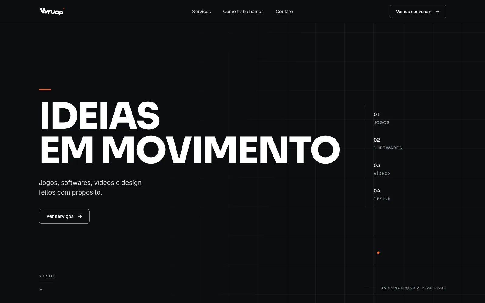

Ideias que saem do papel. Experiências que ganham vida.
Design, desenvolvimento e experimentação digital. Criamos sites, interfaces e soluções com identidade própria.
Ideias em Movimento
Projetos selecionados
Trabalhos e experimentos autorais da Wruop. Cada projeto mostra o status real: concluído, protótipo ou conceito.
-
Wruop Gravity · Experiment 001
Um pato feito de milhares de partículas anda de skate pela tela, bate na borda, se desfaz e se reconstrói virado para o outro lado. Com um botão, as mesmas partículas viram a logo da Wruop, caem com gravidade ou explodem.
- Física própria em passo fixo, igual em telas de 60 e 120 Hz
- Controle de desempenho que ajusta a quantidade de partículas ao aparelho
- Teclado, toque e movimento reduzido
-

Wruop, primeira versão do site
A primeira casa da Wruop na web: identidade em grafite, preto e laranja, tipografia própria hospedada no site e uma página única que apresentava as áreas do estúdio. Foi substituída por este site e continua preservada no repositório.
- HTML e CSS sem dependências, publicado no GitHub Pages
- Logo e ícones vetoriais em SVG
Serviços
Três frentes, sempre com o mesmo cuidado: entender o que você precisa, desenhar com intenção e entregar algo que funciona de verdade.
-
Sites e experiências web
Sites institucionais, portfólios e páginas de lançamento que explicam o que você faz em poucos segundos e levam o visitante ao próximo passo. Rápidos, acessíveis e fáceis de manter.
- Site pronto para celular e computador
- Conteúdo organizado para quem chega pela primeira vez
- Publicação no seu domínio
-
Aplicações e ferramentas digitais
Ferramentas sob medida para tarefas que hoje tomam tempo: painéis, sistemas internos, automações e protótipos para testar uma ideia antes de investir pesado nela.
- Protótipo funcional para validar cedo
- Interface pensada para quem vai usar todo dia
- Código documentado e entregue a você
-
Design de interfaces e experiências interativas
Telas, fluxos e interações claros e com personalidade. Do protótipo navegável à animação que mostra como um produto funciona.
- Telas e fluxos prontos para desenvolvimento
- Sistema visual consistente
- Movimento e microinterações com propósito
Processo
Quatro etapas, com algo concreto para você ver e aprovar em cada uma.
-
Descoberta
Conversamos sobre o objetivo, o público e as restrições. Saímos com um escopo claro, incluindo o que fica de fora.
-
Direção criativa
Definimos a linguagem visual e a estrutura antes de programar. Você aprova a direção vendo exemplos, não só lendo descrições.
-
Desenvolvimento
Construímos em etapas, com versões que você abre no navegador e testa ao longo do caminho.
-
Revisão
Testamos no celular e no computador, cuidamos de acessibilidade e velocidade, ajustamos o acabamento e publicamos.
Sobre
A Wruop é um estúdio independente que combina tecnologia, design e experimentação para construir produtos digitais.
Cada projeto começa com uma pergunta simples, o que precisa existir, e termina em algo que funciona no navegador de verdade, não só numa apresentação.
A experimentação faz parte do método. Projetos de laboratório como o Wruop Gravity são onde testamos física, movimento e interação antes de levar o que funciona para o trabalho com clientes.
Vamos tirar sua ideia do papel?
Conte o que você quer construir e qual problema isso resolve. A primeira conversa serve para entender se e como podemos ajudar.